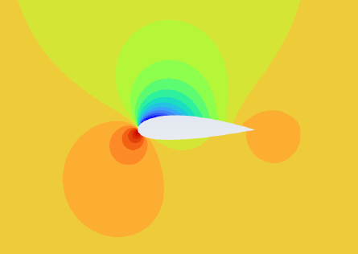
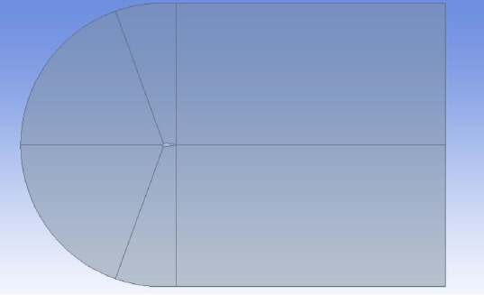
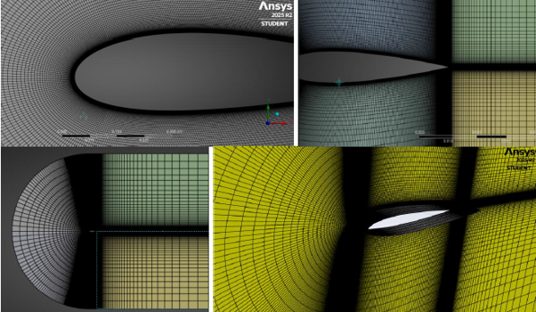
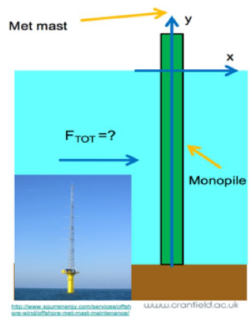

This module combined two fluid-mechanics investigations. The first assessed the aerodynamic behaviour of a symmetric NACA 0019 airfoil, a cambered NACA 2421 airfoil, and a circular bluff-body profile at low Reynolds number.
The second applied linear Airy wave theory and the Morison equation to determine the time-varying horizontal wave load on a monopile-supported meteorological mast.

The airfoil study operated at a free-stream velocity of 8 m/s with a characteristic chord length of 0.1 m, giving a Reynolds number of approximately \(5.33 \times 10^4\). This is a regime where laminar separation bubbles, transition, and early separation strongly influence aerodynamic performance.
A three-dimensional C-grid computational domain was created with 10 chord lengths upstream, 20 downstream, 20 chord lengths in height, and a 0.2-chord span. The inlet used low-turbulence flow conditions, with a pressure outlet and zero-shear far-field boundaries.
Steady-state CFD was run using the k-ω SST turbulence model with the \(\gamma-Re_{\theta}\) transition model, chosen to better capture transition and stall behaviour in low-Reynolds-number airfoil flow.
Thin-airfoil theory provided an inviscid baseline for lift prediction, while XFOIL supplied viscous aerodynamic polars for the NACA profiles. The analytical approach predicts a linear lift increase with angle of attack and cannot capture drag, separation, or stall.
XFOIL predicted the NACA 0019 profile to stall at approximately 8.8° and to reach a peak lift-to-drag ratio of around 23 at 6.2°. The NACA 2421 had a lower maximum \(C_l/C_d\) of approximately 8.2 at 2.2°, illustrating the influence of camber and low-Reynolds-number separation behaviour.
The comparison showed why thin-airfoil theory is useful for first estimates but insufficient for practical design decisions where viscosity, thickness, and boundary layer separation govern the operating envelope.

A structured, biased mesh was produced around the airfoil to retain \(y^+ < 1\), enabling near-wall flow resolution without relying on wall functions. The simulation used approximately 300,000 elements and converged when residuals fell below \(1 \times 10^{-6}\).
The mesh quality remained well within recommended practice, with an average orthogonal quality of 0.97 and average skewness of 0.05. Refinement around the leading edge, trailing edge, and airfoil surface captured the gradients required to resolve pressure recovery and separation.
The pressure contour showed high pressure at the lower leading-edge stagnation region and low pressure over the suction side, demonstrating the pressure difference responsible for aerodynamic lift.
CFD pathlines captured the transition from attached flow before stall to a separated, recirculating wake after stall. This visualisation linked the aerodynamic coefficients directly to the underlying flow physics rather than treating lift and drag as isolated output values.
CFD broadly reproduced the XFOIL aerodynamic trends, while predicting some differences in peak lift, drag, and stall angle. These differences are expected in a low-Reynolds-number regime where laminar separation bubbles, transition treatment, mesh sensitivity, and steady-state assumptions can shift the apparent stall behaviour.
The circular profile offered a useful bluff-body comparison. It produced negligible lift and a drag coefficient close to 0.79 across the tested angles, with a broad recirculating wake confirming the penalty of large-scale flow separation.

The offshore-loading section applied linear Airy wave theory to calculate the wave kinematics acting on a monopile-supported meteorological mast. The scenario used a 3 m wave height, 7.5 m monopile diameter, 160 m water depth, and 15 s wave period.
The calculated wavelength was 351.3 m, giving \(D/\lambda = 0.021\). This is below the 0.2 threshold, confirming that the Morison equation was appropriate for the slender-structure loading condition.
The depth-to-wavelength ratio was approximately 0.46 — formally intermediate depth — but the deep-water approximation introduced an estimated free-surface velocity difference of only 0.65%, making the specified deep-water formulation appropriate for the calculation.
The maximum water-particle velocity was calculated as 0.628 m/s, producing a Keulegan–Carpenter number of 1.26. Together with the geometry ratio, this placed the system within an inertia-dominated loading regime.
The drag contribution was therefore considered negligible and the horizontal wave load was governed by the inertia component of the Morison equation.
The resulting maximum horizontal wave-induced force on the monopile was:
The full report includes aerodynamic coefficient comparisons, CFD contours, mesh strategy, Airy-wave assumptions, and the complete Morison-equation derivation.
↓ Download Full Report (PDF) ← Back to Modules